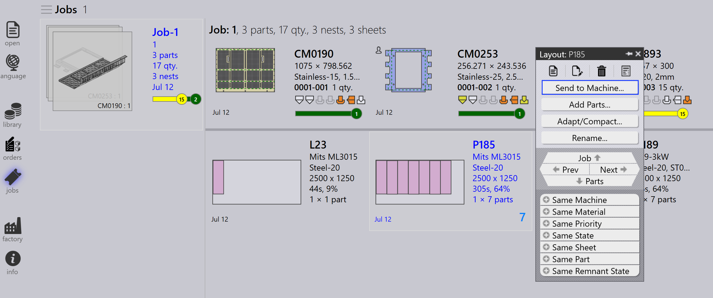
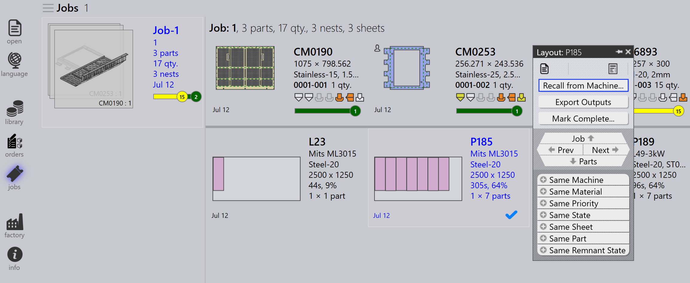
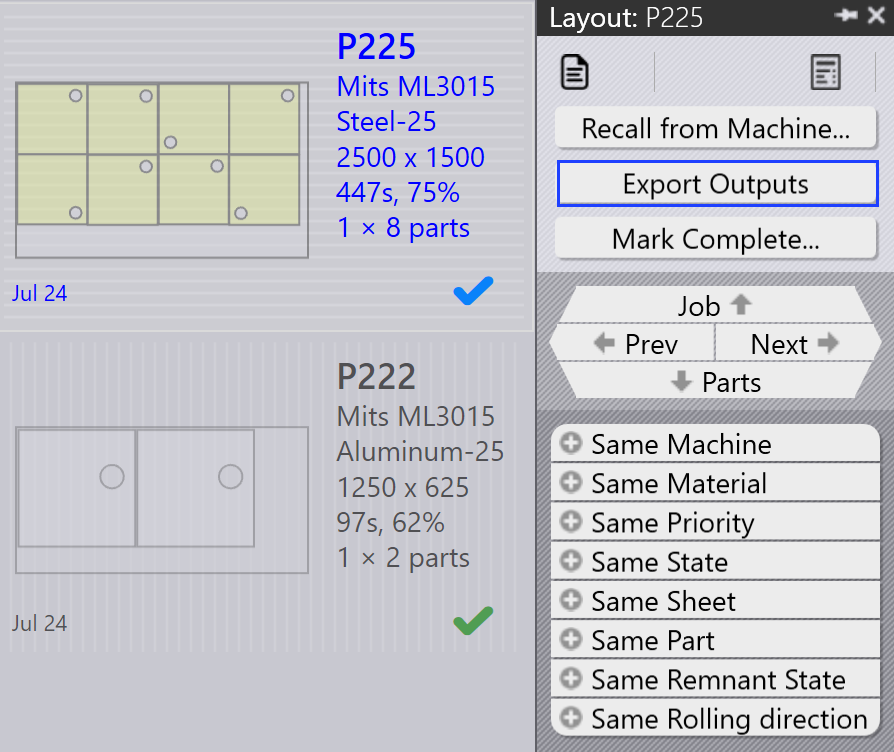
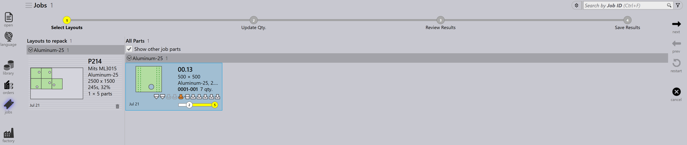
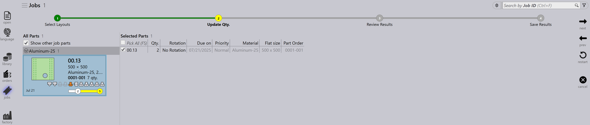
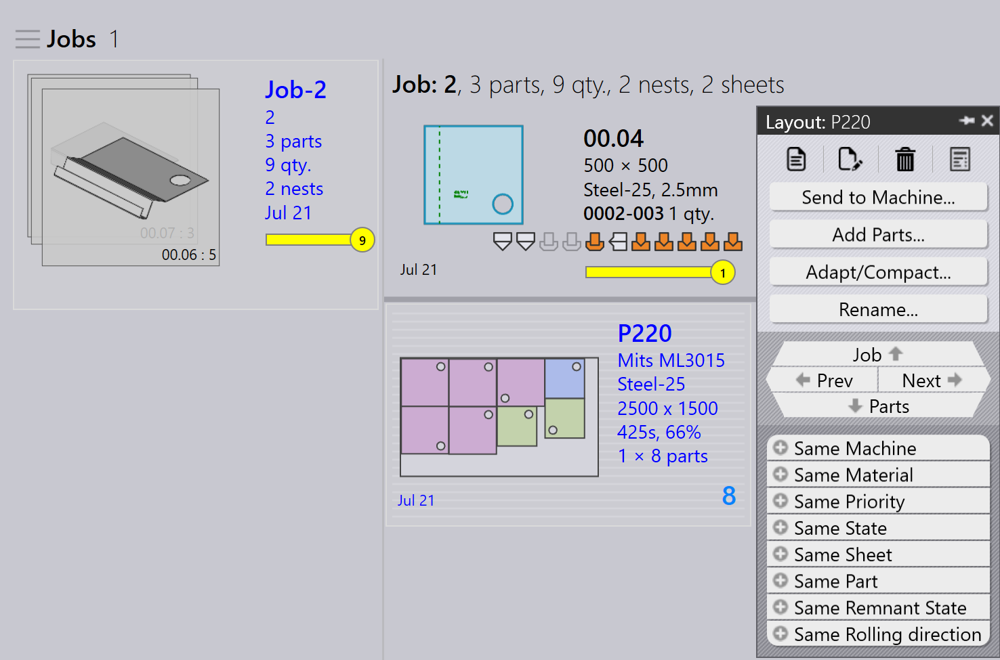
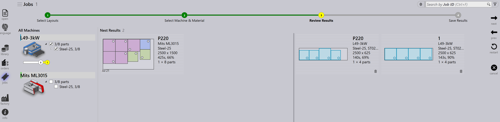
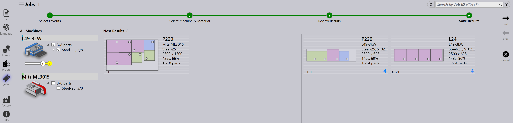
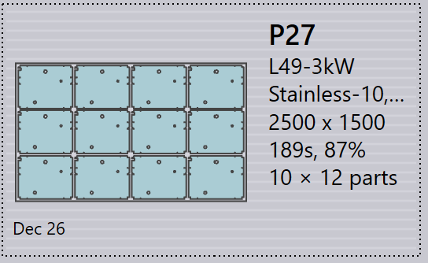
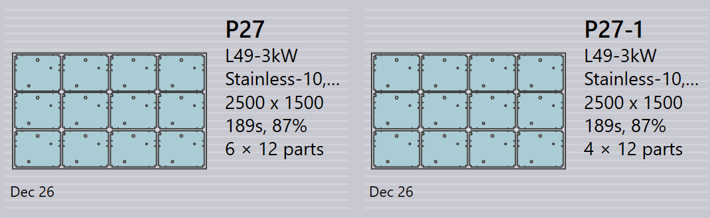

Painel de layout
Esta seção explica ações relacionadas ao layout como Enviar para a máquina…, Recuperar da máquina…, Exportar saídas, Marcar como concluído…, Adicionar peças…, Adaptar/compactar…, Dividir layouts…, e outras opções usadas para gerenciar instâncias de layout.

|
|


Enviar para a máquina…
-
Quando um nesting está pronto (preenchido ou necessário com urgência), você pode enviá-lo para a máquina.
-
Clique com o botão direito no nesting e selecione Enviar para a máquina….
-
Uma pasta é criada automaticamente, nomeada conforme o nesting.
-
Arquivos de saída (fxlyt, NC, report, csv) são exportados para o local de saída do JOB.
-
Nestings enviados para a máquina são mostrados com marca de verificação azul.

| Uma vez liberados, esses nestings não são mais tentados para reempacotamento. |
Recuperar da máquina…
-
Se a saída precisar de validação ou atualização (por exemplo, adicionar mais peças):
-
Clique com o botão direito no layout exportado.
-
Selecione Recuperar da máquina….
-
-
Os arquivos de saída e a pasta (fxlyt, NC, report, csv) são excluídos.
-
O nesting se torna editável novamente.
-
Você pode fazer alterações e enviá-lo para a máquina novamente.

Exportar saídas
-
Clique com o botão direito em qualquer layout (nesting) que foi enviado para a máquina e clique em Exportar saídas.

-
A opção Export Outputs exporta os arquivos NC, Report e Layout para as respectivas pastas de saída da máquina.
-
Esta opção regenera o arquivo NC com as configurações de unidade atuais para o layout.
| Export Outputs não está disponível para Layouts que estão Completos e Layouts que estão aguardando na fila para reempacotamento. |
Marcar como completo
-
Uma vez que o nesting é processado na máquina, clique com o botão direito no nesting e selecione Marcar como concluído….
-
Você pode selecionar múltiplos nestings e marcá-los como completos ao mesmo tempo.
-
Quando um nesting é marcado como completo:
-
Ele fica acinzentado, é movido para o final da lista e mostrado com uma marca de verificação verde.
-
O layout é removido da lista de layouts ativos.
-
Os status da peça e do job são atualizados, e as quantidades processadas passam para o estado concluído.
-
Os arquivos de saída desse layout são removidos do local de saída da máquina para evitar uso duplicado.

-
Adicionar peças…

-
Use esta opção para adicionar mais peças a um layout relativamente mal empacotado. Assim como o Nesting Interativo, esta é uma opção orientada por assistente e pode ser usada em um único ou múltiplos layouts ao mesmo tempo.
-
O TruSmartCAM monta o assistente de reempacotamento de Layout na área de trabalho principal quando esta opção é usada. Mantenha a tecla Ctrl pressionada e selecione uma ou mais peças para serem empacotadas no(s) layout(s) e pressione Próximo.

-
As peças selecionadas são exibidas na próxima etapa com uma coluna de quantidade editável. Atualize as quantidades de peças se necessário no campo Update Qty. Clique em Próximo para prosseguir para o nesting. Note que as quantidades só podem ser aumentadas, não diminuídas.

-
Todos os layouts são aninhados separadamente, e os resultados aninhados são exibidos com as peças recém-empacotadas colocadas neles. Selecionar o layout exibe todas as peças existentes do layout. O resultado é descartado automaticamente se nenhuma peça nova for colocada durante o reempacotamento. Um layout com múltiplas cópias pode resultar em padrões diferentes após o reempacotamento.

Adaptar/compactar…
-
Este comando baseado em assistente pode ser usado para adaptar um layout de uma máquina para outra quando a máquina original está indisponível ou quando a carga de trabalho da máquina precisa ser balanceada.

-
Pode ser usado quando a chapa planejada está fora de estoque e o layout precisa ser replanejado em outra chapa disponível.
-
Você pode mesclar layouts empacotados em chapas menores em chapas maiores para usar o material de forma mais eficiente.
-
Você pode dividir layouts empacotados em chapas maiores em chapas menores se estoques de chapas grandes não estiverem disponíveis.
-
Você pode melhorar a eficiência de empacotamento de múltiplos layouts (mesmo de máquinas diferentes) mesclando-os.
-
Para usá-lo, selecione um ou mais layouts e clique em Adaptar/compactar… para abrir o assistente na área de trabalho.

-
O painel esquerdo mostra todos os layouts selecionados e o painel Parts mostra as peças do layout.

-
Selecione a máquina alvo e o material da chapa, então clique em Próximo para realizar o re-nesting.
-
Os novos resultados de nesting são mostrados no painel de resultados.

-
Clique em Próximo para salvar o layout adaptado ou compactado.

Dividir um layout
A opção Dividir layouts… permite dividir um layout existente em múltiplos layouts modificando quantidades, sem a necessidade de refazer ferramentaria ou nesting.
Este recurso é particularmente útil nos seguintes cenários:
-
Quando você precisa produzir uma parte da quantidade total imediatamente enquanto agenda a quantidade restante para produção posterior.
-
Quando os requisitos de produção precisam ser distribuídos em múltiplos turnos ou dias para otimizar o fluxo de trabalho e a utilização de recursos.
-
Quando uma máquina específica está temporariamente indisponível ou ocupada, e você precisa ajustar o layout para acomodar as restrições de produção atuais.
Para dividir um layout, execute as seguintes etapas:
-
Na visualização de Layouts, selecione o layout desejado.

-
Clique em Dividir layouts….

-
Insira o valor desejado em Novas cópias.

-
Clique em OK.

O layout selecionado agora está dividido em dois layouts com quantidades ajustadas.